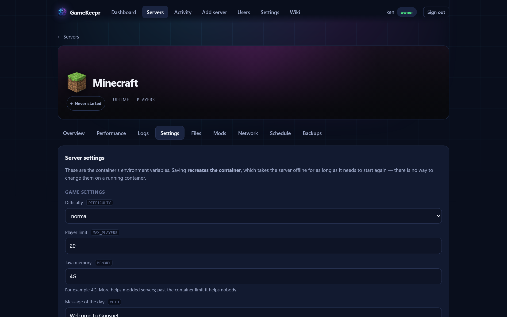

Files and settings

The Files tab
A file browser over the server's own data directories — including when the server is stopped, which is exactly when you are allowed to change things. Text files open in an editor; every save first writes a timestamped backup beside the file, so a bad edit is one rename away from undone.
While the server runs, everything is read-only. That is a server-side rule, not a greyed-out button: a game rewrites its own configuration on shutdown, so an edit made while it runs would be silently overwritten — or worse, half-read.
The Settings tab
The container's environment variables. Variables the game registry recognises get a label, a line of context and a real control — a toggle, a number field with its range, a dropdown — and are validated before anything happens: a player limit of 5000 is refused with the range in the message, not handed to a game that fails on it minutes later. Every other variable still shows as a plain field.
Saving recreates the container (environment variables cannot change on a running one), which takes the server offline for one start. Secrets are shown as dots and never echoed back; leave them as-is to keep the current value.
The game's own config file
For games the registry knows well enough, the Settings tab also finds the file the game actually loads inside the server, and shows its join settings with labels: server name, world, password, admin password. The file beats environment variables as a source of truth where the image allows it: the file's keys are defined by the game and identical under every image, while env spellings differ per image maintainer.
Covered today, each researched against the game's own documentation:
| Game | File | What it carries here |
|---|---|---|
| Minecraft (Java) | server.properties | name (motd), world — env-templated under itzg, shown read-only |
| Minecraft (Bedrock) | server.properties | name, world — env-templated under itzg; Bedrock has no passwords at all (allowlist) |
| Project Zomboid | servertest.ini (found by name) | name, password |
| 7 Days to Die | serverconfig.xml | name, world, password — admins are a permissions list, not a password |
| Factorio | server-settings.json | name, password — admins are a username list |
| Terraria | serverconfig.txt | password — vanilla has no admin password |
| V Rising | ServerHostSettings.json (the live copy, not the StreamingAssets defaults) | name, world, password — admins are Steam IDs |
| ARK: Survival Evolved | GameUserSettings.ini | name, password, admin password — ich777 passes these as launch arguments, so the file is shown read-only |
| Conan Exiles | ServerSettings.ini | password, admin password — the display name lives in a second file, out of honest reach |
| Enshrouded | enshrouded_server.json | name — passwords live nested per role group since the userGroups update; edit those on the Files tab |
Games deliberately absent, with the reason: Satisfactory is claimed in-game (no pre-boot name/password config exists); Rust has no join password at all (RCON is its only credential, offered as a typed variable instead); Space Engineers stores its password as a salted hash no text field can honestly write; Soulmask takes everything as launch arguments; Lethal Company has no dedicated server; Palworld's single-tuple INI is regenerated from variables by its common image, which the typed variables already cover.
Three honest behaviours:
- Apply restarts and verifies. Saving stops the server, edits only the asked-for lines (comments and everything else stay byte-for-byte, with the same timestamped backup as a hand edit), starts it again, and then runs the same first-boot verification a deploy gets — the game answering as the name you just set is the proof the change really landed.
- Env-templated images are told apart. Some images (Minecraft's itzg, for one) rewrite this file from environment variables on every start; editing the file there is lost work, so the portal shows it read-only with a pointer to the matching variables above instead of offering an edit it knows will be undone.
- No file yet is said plainly. Most games write their config on first boot; before that the section says to start the server once, instead of inventing a file the game might ignore.
Everything else in the file remains editable on the Files tab.
For composed Steam servers
Two files in the steamcmd directory are GameKeepr's own and worth knowing: gamekeep-start.sh is the script the container runs on every start (edit it here if the game needs something unusual), and docker-compose.yml is the same server in compose form — take it to any machine and reproduce the server without the portal.